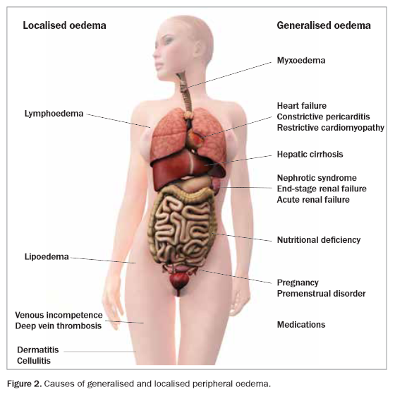
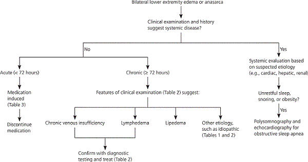

Approach to Lower Limb Pedal Edema
1. Causes of pedal edema

2. Differential Diagnosis of B/L Lower Extremity Edema

2.1. Systemic causes
2.1.1. COMMON
- Cardiac (CCF, Restrictive cardiomyopathy, constrictive pericarditis)
- Hepatic (Cirrhosis)
- Renal (Nephritis, Nephrotic syndrome)
- Premenstrual
- Mass effect (Obesity, Pregnancy)
- Thyroid
2.1.2. UNCOMMON
- Malabsorption - protein loss
- OSA
2.1.3. RARE
- Angioedema
2.1.4. MEDICATIONs
- Antidepresasnts
- Trazodone
- Mirtazpaine
- Rare (Escitalopram)
- Antipsychotics
- Atypicals - Olanzapine, Risperidone
- MS
- Lithium
- Valproate
- Other medications
- Beta-blockers
- CCBs
- Hormones
- NSAIDs
2.2. Local Causes
- Gravitational (Venous insufficiency)
- Lymphedema
- Lipoedema
- Bilateral DVT
3. DD of U/L Pedal Edema

4. Evaluation
4.1. History
- Duration: acute (<72h) vs. chronic
- Pain: DVT, CRPS, less severe in venous insufficiency
- Systemic Disease
- Cardiac: orthopnea, PND
- Renal: proteinuria
- Hepatic: jaundice, ascites
- Malignancy: lymphedema
- Improvement with elevation/recumbency: venous insufficiency
- OSA: snoring, daytime somnolence
- Medications: B-blocker, CCB, hormones, NSAID’s
4.2. Physical Exam
- Unilateral / Bilateral
- Pitting / Nonpitting
- Tenderness: DVT, cellulitis
- Varicose veins: venous insufficiency
- Kaposi-Stemmer: inability to pinch dorsum of foot at base of 2nd toe (lymphedema)
- Systemic Disease
- Cardiac: JVD, crackles
- Hepatic: ascites, scleral icterus, spider angiomas
- Brawny, medial maleolar involvement: venous insufficiency
4.3. Key Features Distinguishing Cellulitis
- Typically unilateral and acute
- Often with systemic symptoms (fever, leukocytosis)
- Risk Factors: immunosuppression, previous episodes, DM, PVD
5. Lab workup
5.1. First line
- Full blood count
- serum albumin
- lipid profile
- liver function tests
- thyroid function tests
- urea, creat and electrolytes
- urine-r/m
- blood pressure
- electrocardiogram
5.2. 2nd line
- CXR
- 2D-echo
- Trop I
- Immunological testing - C3, C4, and IgE
- PSG
6. References
- ddxof.com
- Hopcroft, Keith; Forte, Vincent. Symptom Sorter (p. 304). CRC Press. Kindle Edition.
- AAFP
- medicinetoday.com
- Lithium
- Olanzapine